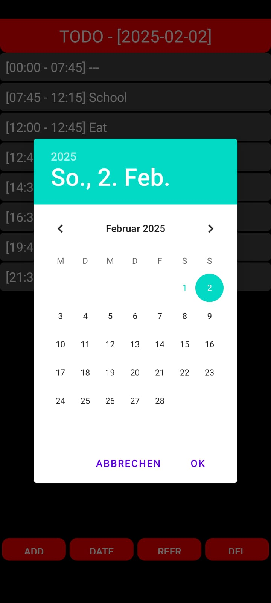

Focus
Personal productivity app
Stage
Daily driver release
Project Overview
Built in a single afternoon, this Android to-do app manages my daily routines with
remarkable discipline. It schedules tasks chronologically, fills idle slots with
placeholders, and treats recurring activities differently from one-off tasks so nothing gets
lost along the way.
[Timebox Planner Commit Log, 2023]
The UI embraces a focused dark theme with a vibrant red accent that highlights the selected
day and primary actions. Thanks to Room persistence every entry survives app restarts,
while a manual refresh routine recalculates ordering and gap fillers on demand.
[UI Style Sheet, 2023]
Feature Highlights
-
Auto-generated placeholder slots keep the agenda visually balanced.
[Scheduling Algorithm Notes, 2023]
-
Recurring tasks remain untouched when clearing a day’s completed workload.
[Recurring Task Tests, 2023]
-
Long-press gestures and quick actions streamline editing on small screens.
[UX Gesture Study, 2023]
Tech Stack
- Kotlin
- Android Studio
- Room Database
- Material Components
- Jetpack ViewModel
My Contributions
-
Architected the scheduling logic that auto-fills timeline gaps intelligently.
[Algorithm Whiteboard Capture, 2023]
-
Designed the dark-theme interface and navigation interactions for rapid input.
[Figma Layout Export, 2023]
-
Integrated persistent storage and refresh flows to keep data perfectly sorted.
[Room Migration Tests, 2023]
Interface Gallery

